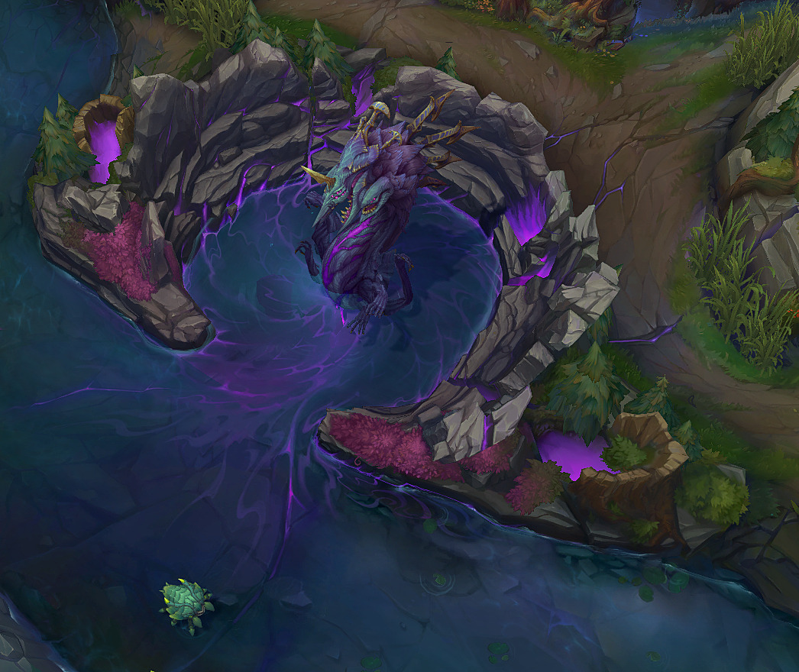

Изменения монстров в новом сезоне LoL
В игру добавили новый тип монстров — личинки Бездны. Они будут появляться на 5 минуте в логове Барона Нашора, а время воскрешения каждой составит четыре минуты (максимум шесть штук за матч). За их убийство все игроки команды получат усиление, которое позволит наносить периодический урон по вышкам. Также бафф будет призывать клещей Бездны, которые атакуют строения. Их количество зависит от уничтоженных личинок.

Герольд Бездны
Теперь Герольд появляется на 14 минуте. После убийства монстра игроки по-прежнему получат в награду «Глаз Герольда», однако его действие слегка изменится. Теперь в монстра можно залезть, нажав ПКМ, и управлять им как санями в «Штурме Нексуса». При направлении на башню с чемпионом внутри он нанесёт больше урона, чем если бы врезался в неё самостоятельно.
Столкновения с вражеским чемпионом нанесёт ему урон и подбросит в воздух. После столкновения с башней или элементом ландшафта чемпион, ехавший на герольде, будет сброшен и перестанет его контролировать.